Source: https://www.youtube.com/watch?v=TspuiaFX2YQ — 23 events (peak > -32 dBFS, longer than 0.4 s).
Reference audio is not included. Its provenance is unclear, so this page shows only analysis of it (spectrograms, pitch tracks, measurements). Each event links to its moment in the source. Every player on this page plays our own resynthesis, rebuilt from the measured pitch contour, slip-pulse timing and average spectral envelope.
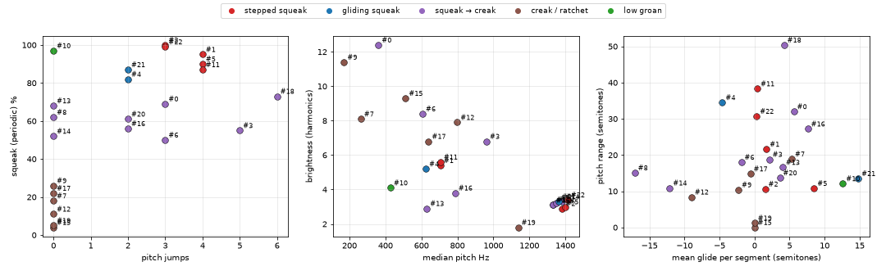
| # | category | duration_s | creak_rate_hz | squeak_pct | n_segments | n_jumps | median_jump_st | f0_median_hz | f0_range_st | mean_glide_st | wobble_st | centroid_hz | harmonic_count |
|---|---|---|---|---|---|---|---|---|---|---|---|---|---|
| 0 | squeak → creak | 4.56 | 146.0 | 69.0 | 22 | 3 | 20.7 | 361.0 | 32.0 | 5.6 | 1.59 | 4466.0 | 12.4 |
| 1 | stepped squeak | 1.62 | 0 | 95.0 | 7 | 4 | 8.3 | 706.0 | 21.6 | 1.7 | 1.28 | 3826.0 | 5.4 |
| 2 | stepped squeak | 1.11 | 0 | 100.0 | 4 | 3 | 2.6 | 1383.0 | 10.6 | 1.5 | 0.22 | 3974.0 | 2.9 |
| 3 | squeak → creak | 0.77 | 0 | 55.0 | 7 | 5 | 5.9 | 962.0 | 18.8 | 2.1 | 2.23 | 6498.0 | 6.8 |
| 4 | gliding squeak | 2.2 | 73.0 | 82.0 | 8 | 2 | 23.3 | 625.0 | 34.5 | -4.6 | 0.7 | 3273.0 | 5.2 |
| 5 | stepped squeak | 1.6 | 0 | 90.0 | 8 | 4 | 15.5 | 1401.0 | 10.8 | 8.5 | 3.17 | 4272.0 | 3.0 |
| 6 | squeak → creak | 1.59 | 174.0 | 50.0 | 6 | 3 | 10.7 | 606.0 | 18.0 | -1.9 | 0.58 | 5113.0 | 8.4 |
| 7 | creak / ratchet | 1.95 | 83.0 | 18.0 | 5 | 0 | 0 | 263.0 | 18.9 | 5.3 | 0.53 | 2128.0 | 8.1 |
| 8 | squeak → creak | 1.12 | 199.0 | 62.0 | 3 | 0 | 0 | 1331.0 | 15.1 | -17.1 | 0.86 | 4071.0 | 3.1 |
| 9 | creak / ratchet | 2.16 | 124.0 | 26.0 | 6 | 0 | 0 | 170.0 | 10.4 | -2.3 | 0.23 | 1935.0 | 11.4 |
| 10 | low groan | 0.59 | 0 | 97.0 | 2 | 0 | 0 | 428.0 | 12.1 | 12.6 | 0.63 | 1775.0 | 4.1 |
| 11 | stepped squeak | 1.18 | 0 | 87.0 | 12 | 4 | 10.5 | 706.0 | 38.3 | 0.4 | 1.47 | 3965.0 | 5.6 |
| 12 | creak / ratchet | 2.6 | 99.0 | 11.0 | 2 | 0 | 0 | 799.0 | 8.4 | -9.0 | 0.57 | 6343.0 | 7.9 |
| 13 | squeak → creak | 1.08 | 162.0 | 68.0 | 5 | 0 | 0 | 630.0 | 16.6 | 4.0 | 0.47 | 1800.0 | 2.9 |
| 14 | squeak → creak | 0.59 | 145.0 | 52.0 | 2 | 0 | 0 | 1383.0 | 10.9 | -12.1 | 0.86 | 4569.0 | 3.3 |
| 15 | creak / ratchet | 0.65 | 156.0 | 4.0 | 2 | 0 | 0 | 512.0 | 0 | 0 | 0 | 4750.0 | 9.3 |
| 16 | squeak → creak | 1.6 | 49.0 | 56.0 | 7 | 2 | 11.9 | 788.0 | 27.2 | 7.6 | 0.85 | 3004.0 | 3.8 |
| 17 | creak / ratchet | 1.38 | 140.0 | 22.0 | 6 | 0 | 0 | 640.0 | 14.8 | -0.6 | 0.08 | 4328.0 | 6.8 |
| 18 | squeak → creak | 2.72 | 38.0 | 73.0 | 12 | 6 | 11.8 | 1330.0 | 50.4 | 4.2 | 1.73 | 4086.0 | 3.1 |
| 19 | creak / ratchet | 0.94 | 30.0 | 5.0 | 3 | 0 | 0 | 1138.0 | 1.2 | 0 | 0 | 2076.0 | 1.8 |
| 20 | squeak → creak | 1.33 | 111.0 | 61.0 | 5 | 2 | 11.8 | 1351.0 | 13.7 | 3.6 | 2.44 | 4288.0 | 3.2 |
| 21 | gliding squeak | 1.3 | 0 | 87.0 | 6 | 2 | 26.0 | 1363.0 | 13.5 | 14.8 | 2.25 | 4483.0 | 3.3 |
| 22 | stepped squeak | 1.49 | 54.0 | 99.0 | 6 | 3 | 7.8 | 1413.0 | 30.7 | 0.3 | 0.32 | 4845.0 | 3.4 |
squeak_pct = share of loud frames that are periodic. harmonic_count = spectral centroid / median pitch (higher = brighter). wobble_st = pitch jitter within segments. glide = pitch change within a segment (positive = rising).
reference: listen in the source at 1 s resynthesis
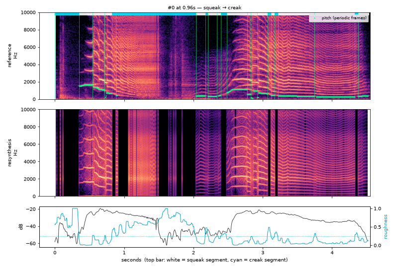
| start s | dur s | type | f0 start | f0 end | roughness | level dB |
|---|---|---|---|---|---|---|
| 0.0 | 0.349 | creak | 0.737 | -46.0 | ||
| 0.349 | 0.195 | squeak | 1541.3 | 1635.2 | 0.009 | -30.0 |
| 0.544 | 0.175 | squeak | 1363.5 | 1060.5 | 0.144 | -22.6 |
| 0.718 | 0.105 | squeak | 408.6 | 665.9 | 0.116 | -22.5 |
| 0.823 | 0.06 | creak | 0.425 | -24.3 | ||
| 0.883 | 1.152 | creak | 446.6 | 444.4 | 0.603 | -32.4 |
| 2.035 | 0.135 | squeak | 362.3 | 380.3 | 0.063 | -44.4 |
| 2.17 | 0.04 | creak | 0.475 | -46.6 | ||
| 2.21 | 0.125 | squeak | 301.5 | 328.4 | 0.116 | -48.6 |
| 2.335 | 0.06 | squeak | 409.1 | 436.1 | 0.226 | -47.3 |
| 2.395 | 0.085 | creak | 0.288 | -47.1 | ||
| 2.479 | 0.294 | squeak | 759.5 | 1134.6 | 0.06 | -27.7 |
| 2.774 | 0.055 | squeak | 560.4 | 538.3 | 0.127 | -22.5 |
| 2.829 | 0.095 | squeak | 162.2 | 946.5 | 0.119 | -24.7 |
| 2.923 | 0.145 | squeak | 236.2 | 635.9 | 0.072 | -23.1 |
| 3.068 | 0.05 | creak | 0.394 | -25.1 | ||
| 3.118 | 0.055 | squeak | 449.7 | 427.1 | 0.214 | -23.6 |
| 3.173 | 0.05 | creak | 0.325 | -25.4 | ||
| 3.223 | 0.524 | squeak | 377.2 | 317.8 | 0.055 | -27.9 |
| 3.746 | 0.584 | squeak | 288.4 | 289.2 | 0.067 | -34.4 |
| 4.33 | 0.045 | creak | 0.289 | -36.1 | ||
| 4.375 | 0.15 | squeak | 331.5 | 380.7 | 0.131 | -44.8 |
reference: listen in the source at 9 s resynthesis
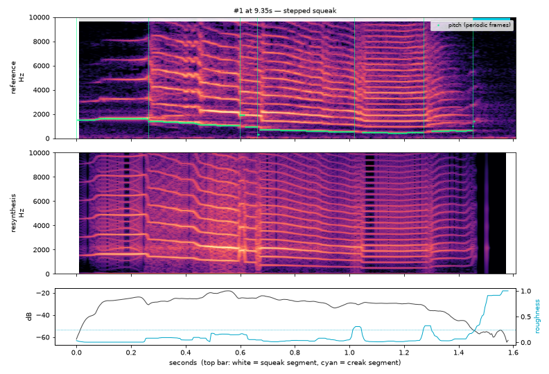
| start s | dur s | type | f0 start | f0 end | roughness | level dB |
|---|---|---|---|---|---|---|
| 0.0 | 0.264 | squeak | 1511.1 | 1632.7 | 0.003 | -28.9 |
| 0.264 | 0.334 | squeak | 1413.7 | 1050.8 | 0.09 | -23.4 |
| 0.599 | 0.065 | squeak | 1919.5 | 936.1 | 0.065 | -24.8 |
| 0.663 | 0.354 | squeak | 310.2 | 551.3 | 0.035 | -27.3 |
| 1.018 | 0.254 | squeak | 469.3 | 474.5 | 0.023 | -29.7 |
| 1.272 | 0.18 | squeak | 602.6 | 679.8 | 0.067 | -39.0 |
| 1.452 | 0.135 | creak | 0.909 | -56.3 |
reference: listen in the source at 14 s resynthesis
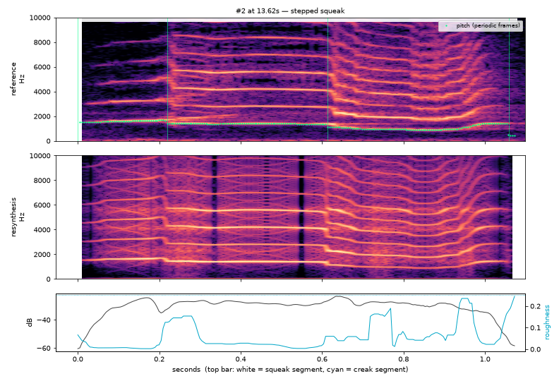
| start s | dur s | type | f0 start | f0 end | roughness | level dB |
|---|---|---|---|---|---|---|
| 0.0 | 0.22 | squeak | 1510.6 | 1667.9 | 0.007 | -31.3 |
| 0.22 | 0.394 | squeak | 1431.2 | 1347.5 | 0.024 | -28.1 |
| 0.614 | 0.444 | squeak | 1130.4 | 1412.4 | 0.059 | -29.2 |
| 1.058 | 0.02 | squeak | 466.1 | 465.9 | 0.205 | -56.8 |
reference: listen in the source at 16 s resynthesis
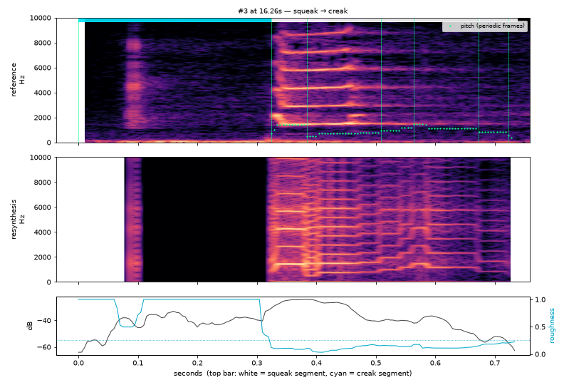
| start s | dur s | type | f0 start | f0 end | roughness | level dB |
|---|---|---|---|---|---|---|
| 0.0 | 0.324 | creak | 1.903 | -40.2 | ||
| 0.324 | 0.06 | squeak | 1005.9 | 1409.4 | 0.102 | -25.8 |
| 0.384 | 0.125 | squeak | 484.6 | 774.2 | 0.101 | -29.2 |
| 0.509 | 0.055 | squeak | 962.5 | 1154.8 | 0.152 | -40.1 |
| 0.564 | 0.11 | squeak | 1439.8 | 1147.1 | 0.113 | -41.6 |
| 0.673 | 0.05 | squeak | 817.2 | 817.0 | 0.182 | -53.9 |
| 0.723 | 0.015 | squeak | 0.215 | -59.5 |
reference: listen in the source at 18 s resynthesis
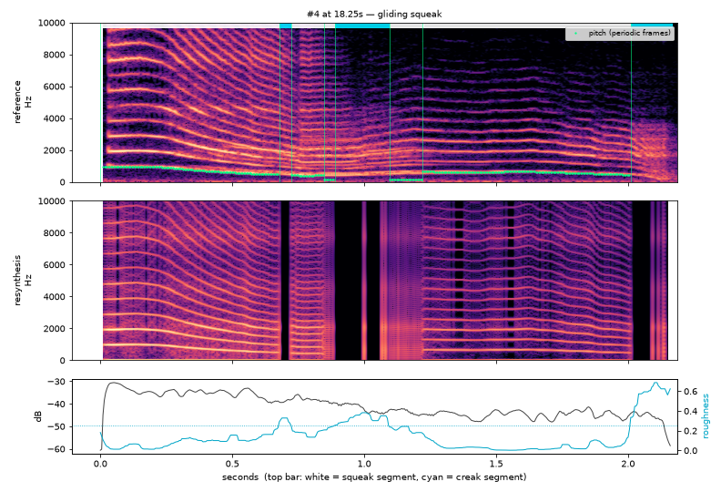
| start s | dur s | type | f0 start | f0 end | roughness | level dB |
|---|---|---|---|---|---|---|
| 0.0 | 0.678 | squeak | 955.3 | 479.3 | 0.095 | -34.9 |
| 0.678 | 0.045 | creak | 0.328 | -38.8 | ||
| 0.723 | 0.125 | squeak | 429.3 | 411.1 | 0.182 | -37.7 |
| 0.848 | 0.04 | squeak | 137.3 | 136.7 | 0.232 | -39.2 |
| 0.888 | 0.21 | creak | 0.331 | -41.7 | ||
| 1.098 | 0.125 | squeak | 126.2 | 130.4 | 0.214 | -43.3 |
| 1.222 | 0.788 | squeak | 644.3 | 453.2 | 0.026 | -44.6 |
| 2.01 | 0.155 | creak | 0.594 | -46.1 |
reference: listen in the source at 23 s resynthesis
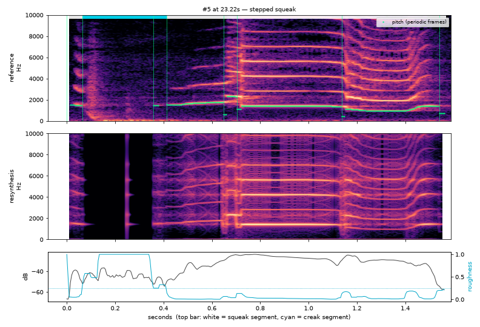
| start s | dur s | type | f0 start | f0 end | roughness | level dB |
|---|---|---|---|---|---|---|
| 0.0 | 0.065 | squeak | 1534.2 | 1443.0 | 0.054 | -44.4 |
| 0.065 | 0.294 | creak | 1.6 | -43.4 | ||
| 0.359 | 0.055 | creak | 1492.3 | 1490.5 | 0.296 | -48.9 |
| 0.414 | 0.234 | squeak | 1549.5 | 1767.8 | 0.006 | -36.0 |
| 0.649 | 0.055 | squeak | 590.5 | 2304.4 | 0.048 | -25.9 |
| 0.703 | 0.434 | squeak | 1134.5 | 1354.8 | 0.022 | -26.2 |
| 1.137 | 0.404 | squeak | 448.3 | 1423.6 | 0.03 | -30.1 |
| 1.541 | 0.025 | squeak | 712.5 | 712.5 | 0.2 | -56.5 |
reference: listen in the source at 26 s resynthesis
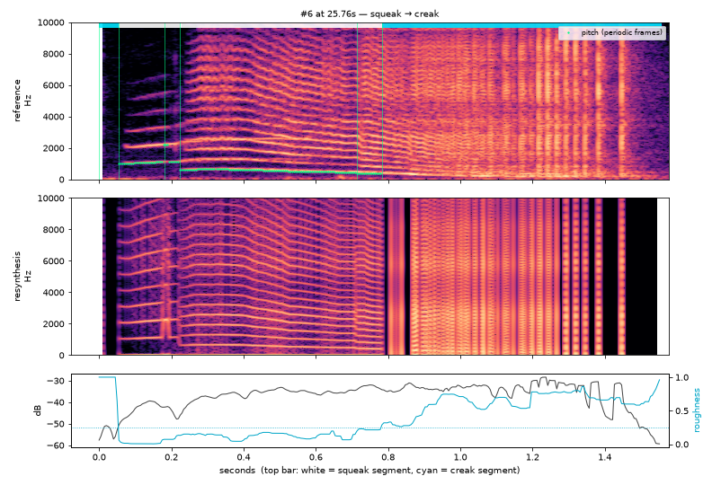
| start s | dur s | type | f0 start | f0 end | roughness | level dB |
|---|---|---|---|---|---|---|
| 0.0 | 0.055 | creak | 1.523 | -53.6 | ||
| 0.055 | 0.125 | squeak | 1029.3 | 1105.6 | 0.008 | -42.6 |
| 0.18 | 0.045 | squeak | 2232.8 | 1132.1 | 0.072 | -44.1 |
| 0.224 | 0.489 | squeak | 611.5 | 456.5 | 0.137 | -36.0 |
| 0.713 | 0.07 | squeak | 408.1 | 383.0 | 0.214 | -32.8 |
| 0.783 | 0.773 | creak | 0.659 | -34.3 |
reference: listen in the source at 30 s resynthesis
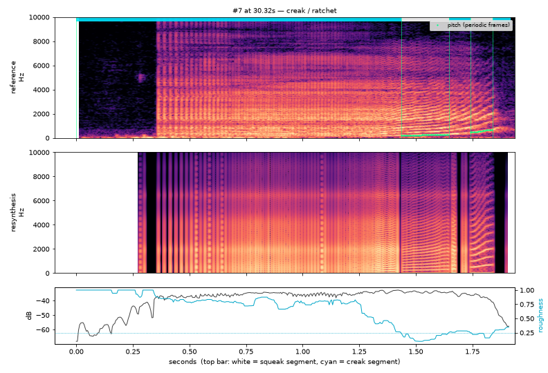
| start s | dur s | type | f0 start | f0 end | roughness | level dB |
|---|---|---|---|---|---|---|
| 0.0 | 1.437 | creak | 0.809 | -37.5 | ||
| 1.437 | 0.21 | squeak | 217.0 | 292.3 | 0.152 | -34.1 |
| 1.646 | 0.095 | creak | 0.28 | -35.2 | ||
| 1.741 | 0.1 | squeak | 484.3 | 665.7 | 0.218 | -37.3 |
| 1.841 | 0.075 | creak | 0.303 | -49.0 |
reference: listen in the source at 34 s resynthesis
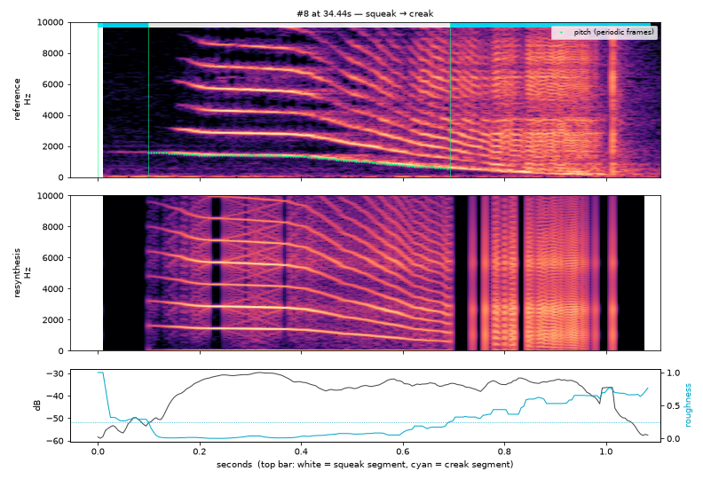
| start s | dur s | type | f0 start | f0 end | roughness | level dB |
|---|---|---|---|---|---|---|
| 0.0 | 0.1 | creak | 0.303 | -53.7 | ||
| 0.1 | 0.594 | squeak | 1599.4 | 595.9 | 0.038 | -34.2 |
| 0.693 | 0.394 | creak | 0.582 | -36.3 |
reference: listen in the source at 38 s resynthesis
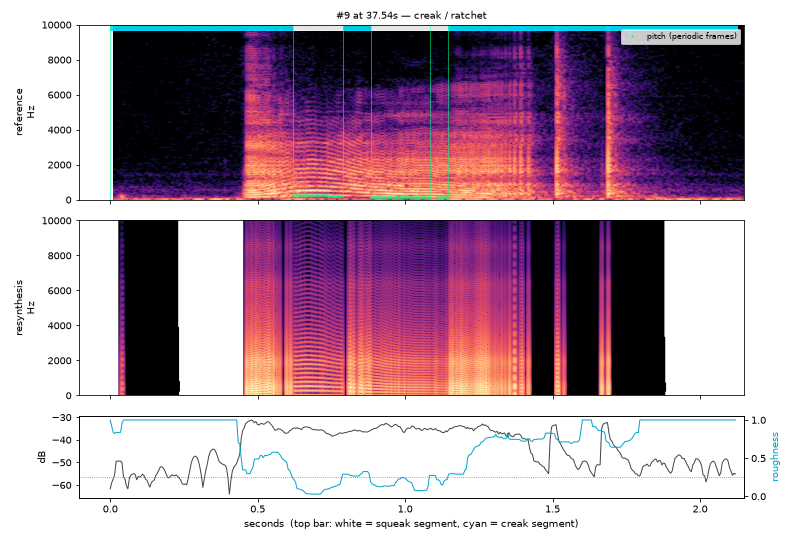
| start s | dur s | type | f0 start | f0 end | roughness | level dB |
|---|---|---|---|---|---|---|
| 0.0 | 0.619 | creak | 1.537 | -42.7 | ||
| 0.619 | 0.17 | squeak | 248.5 | 224.2 | 0.091 | -35.9 |
| 0.788 | 0.095 | creak | 0.29 | -36.3 | ||
| 0.883 | 0.2 | squeak | 175.3 | 149.6 | 0.136 | -34.5 |
| 1.083 | 0.065 | squeak | 138.7 | 137.5 | 0.216 | -35.8 |
| 1.147 | 0.978 | creak | 0.779 | -42.0 |
reference: listen in the source at 42 s resynthesis
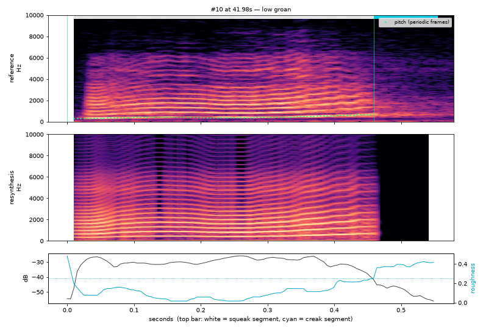
| start s | dur s | type | f0 start | f0 end | roughness | level dB |
|---|---|---|---|---|---|---|
| 0.0 | 0.459 | squeak | 318.9 | 660.4 | 0.101 | -29.8 |
| 0.459 | 0.095 | creak | 0.392 | -48.5 |
reference: listen in the source at 43 s resynthesis
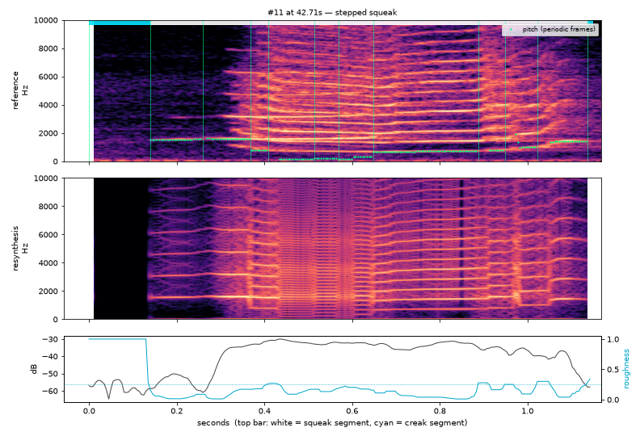
| start s | dur s | type | f0 start | f0 end | roughness | level dB |
|---|---|---|---|---|---|---|
| 0.0 | 0.14 | creak | 1.103 | -57.4 | ||
| 0.14 | 0.12 | squeak | 1525.0 | 1578.5 | 0.041 | -53.8 |
| 0.259 | 0.11 | squeak | 1611.8 | 1581.8 | 0.081 | -38.6 |
| 0.369 | 0.04 | squeak | 776.7 | 759.7 | 0.178 | -32.5 |
| 0.409 | 0.105 | squeak | 174.4 | 172.9 | 0.154 | -31.2 |
| 0.514 | 0.055 | squeak | 227.9 | 226.9 | 0.139 | -32.7 |
| 0.569 | 0.08 | squeak | 134.2 | 327.0 | 0.196 | -32.4 |
| 0.649 | 0.239 | squeak | 652.5 | 719.1 | 0.04 | -33.5 |
| 0.888 | 0.06 | squeak | 789.7 | 793.4 | 0.215 | -35.3 |
| 0.948 | 0.075 | squeak | 1370.3 | 999.9 | 0.175 | -37.3 |
| 1.023 | 0.115 | squeak | 1372.2 | 1405.7 | 0.138 | -41.6 |
| 1.137 | 0.01 | creak | 0.315 | -57.8 |
reference: listen in the source at 46 s resynthesis
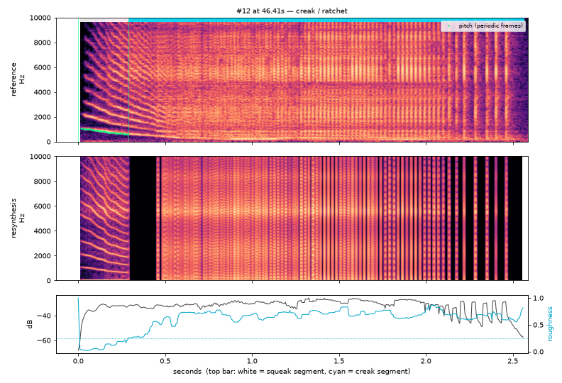
| start s | dur s | type | f0 start | f0 end | roughness | level dB |
|---|---|---|---|---|---|---|
| 0.0 | 0.289 | squeak | 1054.9 | 627.4 | 0.083 | -34.2 |
| 0.289 | 2.275 | creak | 0.683 | -30.8 |
reference: listen in the source at 50 s resynthesis
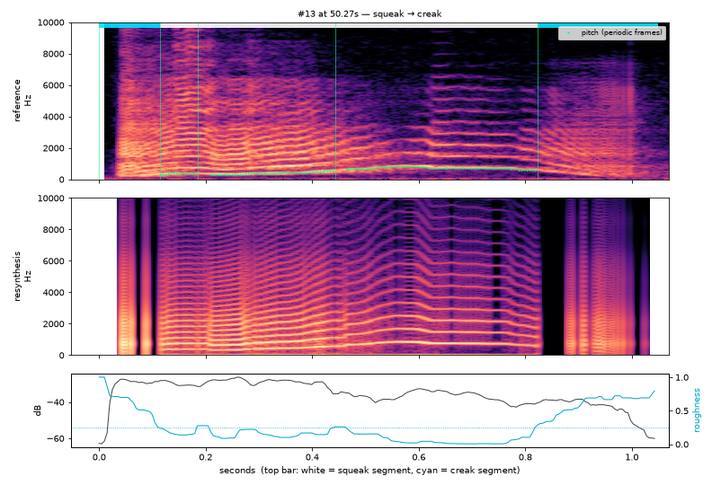
| start s | dur s | type | f0 start | f0 end | roughness | level dB |
|---|---|---|---|---|---|---|
| 0.0 | 0.115 | creak | 0.697 | -30.9 | ||
| 0.115 | 0.07 | squeak | 338.1 | 364.4 | 0.15 | -29.8 |
| 0.185 | 0.259 | squeak | 309.5 | 540.6 | 0.145 | -28.8 |
| 0.444 | 0.379 | squeak | 648.7 | 590.3 | 0.042 | -36.6 |
| 0.823 | 0.224 | creak | 0.681 | -42.3 |
reference: listen in the source at 52 s resynthesis
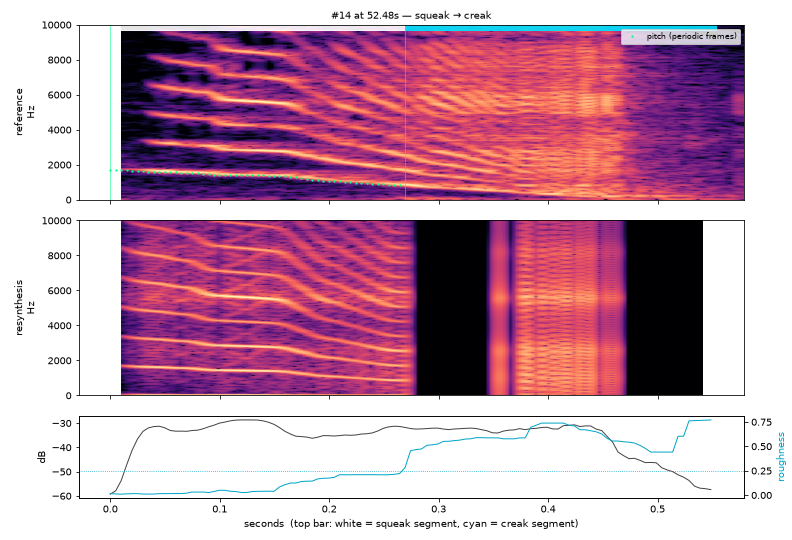
| start s | dur s | type | f0 start | f0 end | roughness | level dB |
|---|---|---|---|---|---|---|
| 0.0 | 0.269 | squeak | 1705.1 | 848.6 | 0.04 | -33.0 |
| 0.269 | 0.284 | creak | 0.58 | -35.1 |
reference: listen in the source at 54 s resynthesis
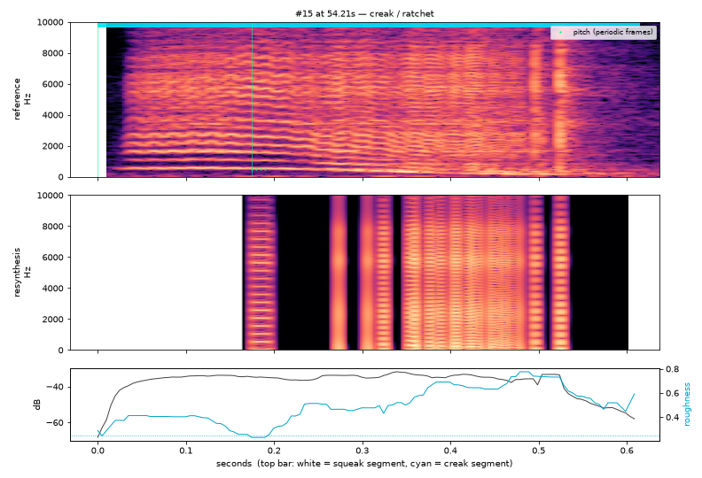
| start s | dur s | type | f0 start | f0 end | roughness | level dB |
|---|---|---|---|---|---|---|
| 0.0 | 0.175 | creak | 0.394 | -36.4 | ||
| 0.175 | 0.439 | creak | 512.4 | 512.4 | 0.519 | -36.0 |
reference: listen in the source at 56 s resynthesis
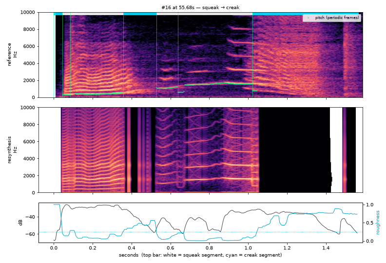
| start s | dur s | type | f0 start | f0 end | roughness | level dB |
|---|---|---|---|---|---|---|
| 0.0 | 0.045 | creak | 1.0 | -51.3 | ||
| 0.045 | 0.04 | squeak | 329.1 | 341.1 | 0.14 | -27.4 |
| 0.085 | 0.274 | squeak | 419.1 | 544.4 | 0.099 | -28.2 |
| 0.359 | 0.17 | creak | 0.431 | -40.1 | ||
| 0.529 | 0.11 | squeak | 1093.1 | 1215.7 | 0.079 | -46.8 |
| 0.639 | 0.384 | squeak | 612.4 | 1591.9 | 0.019 | -40.2 |
| 1.023 | 0.544 | creak | 788.6 | 787.8 | 0.746 | -38.4 |
reference: listen in the source at 58 s resynthesis
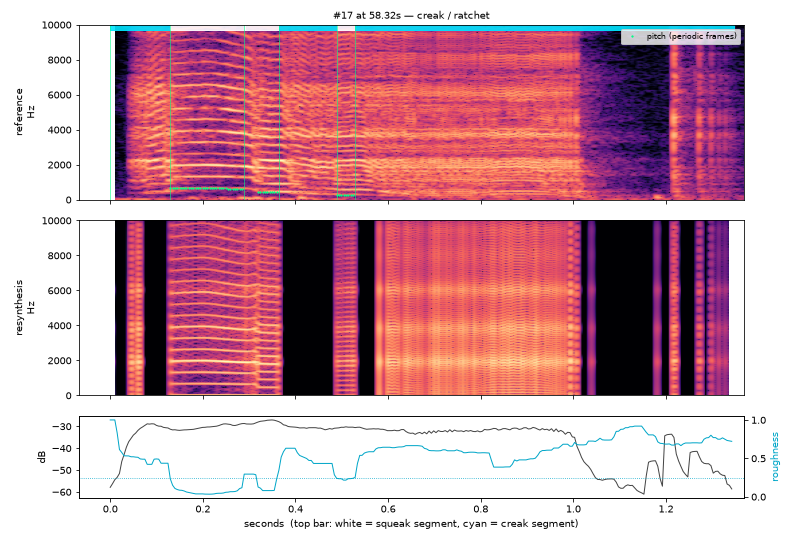
| start s | dur s | type | f0 start | f0 end | roughness | level dB |
|---|---|---|---|---|---|---|
| 0.0 | 0.13 | creak | 0.503 | -33.5 | ||
| 0.13 | 0.16 | squeak | 649.2 | 628.1 | 0.057 | -30.4 |
| 0.289 | 0.075 | squeak | 447.7 | 444.2 | 0.127 | -28.0 |
| 0.364 | 0.125 | creak | 0.473 | -30.4 | ||
| 0.489 | 0.04 | squeak | 277.9 | 279.8 | 0.235 | -30.5 |
| 0.529 | 0.818 | creak | 0.658 | -35.4 |
reference: listen in the source at 62 s resynthesis
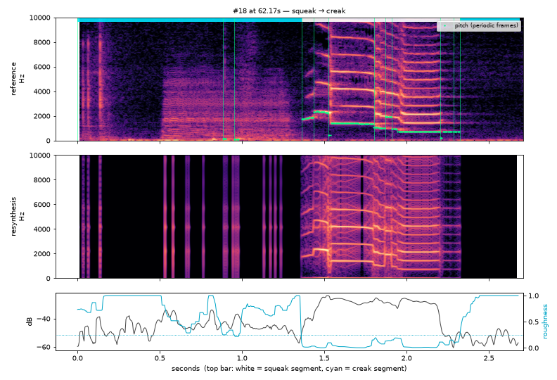
| start s | dur s | type | f0 start | f0 end | roughness | level dB |
|---|---|---|---|---|---|---|
| 0.0 | 0.883 | creak | 0.816 | -43.8 | ||
| 0.883 | 0.07 | creak | 126.7 | 126.7 | 0.298 | -44.0 |
| 0.953 | 0.409 | creak | 120.2 | 123.9 | 0.755 | -45.4 |
| 1.362 | 0.075 | squeak | 1734.6 | 1869.3 | 0.019 | -41.7 |
| 1.437 | 0.09 | squeak | 2349.0 | 2261.9 | 0.009 | -27.5 |
| 1.527 | 0.274 | squeak | 467.2 | 1341.7 | 0.022 | -27.5 |
| 1.801 | 0.07 | squeak | 1064.0 | 985.4 | 0.103 | -27.0 |
| 1.871 | 0.04 | squeak | 1926.5 | 1908.7 | 0.137 | -28.8 |
| 1.911 | 0.294 | squeak | 950.1 | 716.9 | 0.012 | -28.5 |
| 2.205 | 0.08 | squeak | 237.6 | 710.8 | 0.099 | -51.1 |
| 2.285 | 0.04 | squeak | 708.5 | 709.6 | 0.112 | -52.8 |
| 2.325 | 0.359 | creak | 1.163 | -53.1 |
reference: listen in the source at 65 s resynthesis
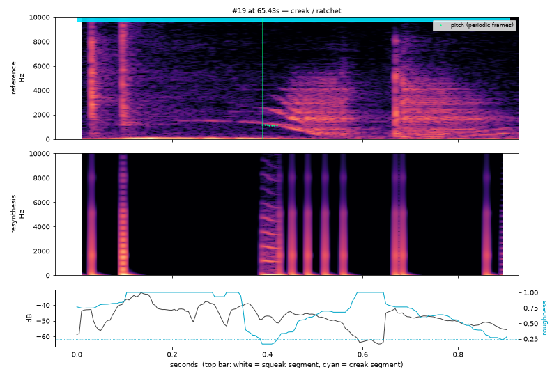
| start s | dur s | type | f0 start | f0 end | roughness | level dB |
|---|---|---|---|---|---|---|
| 0.0 | 0.389 | creak | 1.222 | -41.2 | ||
| 0.389 | 0.504 | creak | 1179.4 | 1111.5 | 0.628 | -49.2 |
| 0.893 | 0.015 | creak | 0.252 | -55.4 |
reference: listen in the source at 67 s resynthesis
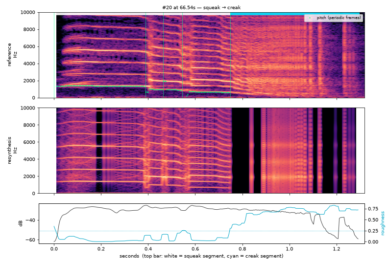
| start s | dur s | type | f0 start | f0 end | roughness | level dB |
|---|---|---|---|---|---|---|
| 0.0 | 0.389 | squeak | 1356.3 | 1333.1 | 0.025 | -29.7 |
| 0.389 | 0.075 | squeak | 666.3 | 963.8 | 0.042 | -26.9 |
| 0.464 | 0.08 | squeak | 1905.9 | 890.5 | 0.165 | -27.7 |
| 0.544 | 0.205 | squeak | 404.4 | 622.3 | 0.047 | -27.8 |
| 0.748 | 0.549 | creak | 0.683 | -33.7 |
reference: listen in the source at 72 s resynthesis
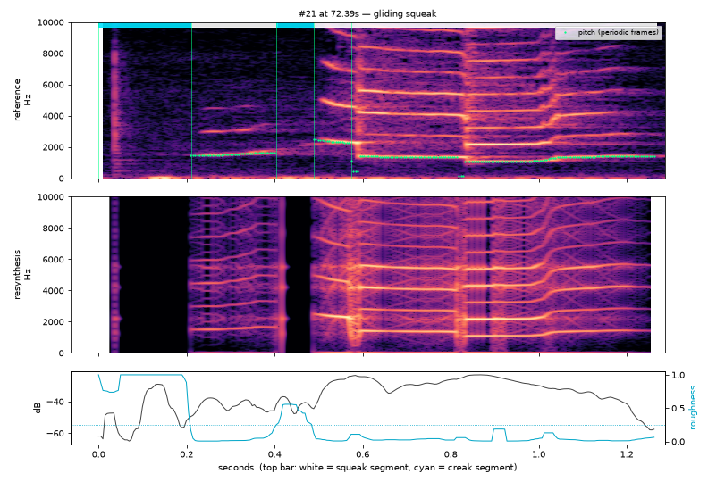
| start s | dur s | type | f0 start | f0 end | roughness | level dB |
|---|---|---|---|---|---|---|
| 0.0 | 0.21 | creak | 1.214 | -41.0 | ||
| 0.21 | 0.195 | squeak | 1481.0 | 1648.6 | 0.012 | -42.1 |
| 0.404 | 0.085 | creak | 0.458 | -41.0 | ||
| 0.489 | 0.085 | squeak | 2470.0 | 2282.4 | 0.015 | -28.9 |
| 0.574 | 0.244 | squeak | 466.0 | 1340.3 | 0.027 | -27.8 |
| 0.818 | 0.449 | squeak | 134.1 | 1399.8 | 0.018 | -30.2 |
reference: listen in the source at 76 s resynthesis
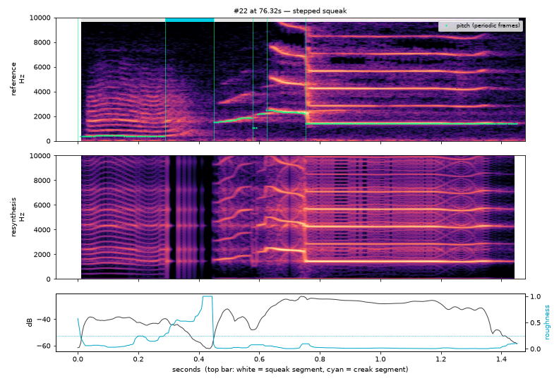
| start s | dur s | type | f0 start | f0 end | roughness | level dB |
|---|---|---|---|---|---|---|
| 0.0 | 0.289 | squeak | 400.3 | 397.1 | 0.068 | -41.2 |
| 0.289 | 0.16 | creak | 0.529 | -48.6 | ||
| 0.449 | 0.13 | squeak | 1545.7 | 1868.3 | 0.019 | -38.4 |
| 0.579 | 0.045 | squeak | 1050.6 | 2204.7 | 0.076 | -41.9 |
| 0.624 | 0.13 | squeak | 2495.3 | 2246.3 | 0.022 | -26.3 |
| 0.753 | 0.703 | squeak | 1414.9 | 1415.6 | 0.009 | -28.6 |